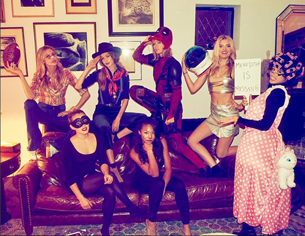

泰勒絲Taylor Alison Swift介紹 |
||
| 簡介 | 音樂欣賞 | 音樂和演唱風格 |
| 簡介 | ||
泰勒的音樂融合了流行樂、流行搖滾和鄉村元素[334][335]，擁有從E3到F#5兩個八度的輕抒情女高音音域[336]。她自稱鄉村藝人，直至2014年《1989》發行，這被她稱為「在音樂層面上有凝聚力的流行專輯[337][338]。」儘管《1989》走流行樂路線[220]，但泰勒仍打算在未來繼續錄製鄉村音樂專輯[338]。 《滾石》斷言，「她可能會在鄉村電台上表演，但她迄今為止為數不多的真正的搖滾明星[339]。」《紐約時報》指出，「絲威夫特的音樂中沒有很多對鄉村樂的暗示——幾個班卓琴掃弦，在舞台上穿著一雙牛仔靴，抱著一個痴痴的吉他——但她迷人、脆弱地表達出獨一無二的納什維爾[340]。」《紐約客》認為她「被認為是納什維爾鄉村流行樂傳統的一部分，不僅在於她寫的敘事曲有著旋律上的識別度和戲劇般的形態——這是納什維爾人的慣用手法[341]。」《衛報》指出泰勒「斯堪的納維亞人流行樂工廠做無用功的效率製作潦草地製作旋律[309]」。 泰勒的聲線被認為是「甜蜜但柔弱」[342]。在錄音棚里錄音，《洛杉磯時報》稱泰勒所「定義」的發音姿勢像是「滑落的線條，就像一聲知足的嘆息或像是挑眉毛，給她那受到只顧享樂的年輕女性歡迎的熱單帶來輕鬆親密的空氣[141]。」《滾石》在《愛的告白》的樂評中表示：「絲威夫特的聲線不受影響得足以掩飾她作為一名歌手是多麼的會算計，為了應付害羞的女孩試圖表白的經典模式歌詞，她降低了她的聲音[343]。」在《愛的告白》的另一篇樂評中，《鄉村之聲》指出她措辭是以前的那種「平淡混亂的，但現在改了。她仍然發出緊張和柔軟的聲音，而且經常迷失在音調中，把某些人搞瘋，但她學會了如何讓歌詞聽起來像是它們的本來意思[142]。」 在演唱會布置方面，《好萊塢報導者》稱泰勒「盡其所能，但肯定不會出現像克莉絲汀·阿奎萊拉或卡麗·安德伍的那種旗鼓相當的場面[342]。」她的演唱會唱功在2009年被描述成「平淡」、「細微，有時像個小馬駒那樣的搖搖晃晃[344][345]。「然而，泰勒拒絕用自動調音修正軟體修音的態度獲得讚賞[346][347][348]。 在接受《紐約人》採訪時，泰勒稱她的主要特點是當作曲家：「我寫的歌、我的聲音只是親近那些歌詞的一種方式[9][349]。「波爾切塔在2010年承認泰勒「並不是最好的技術型歌手」，但形容她是「我們所以知道的最好的溝通者[350]。」絲威夫特的聲樂表現讓人們感到擔心，她已經「投入大量的精力」去改進它[351]。另據2010年的報導，她還在繼續上聲樂課[352][353]。她表示自己唯一對表演感到緊張是在「我不清楚觀眾如何看待我，就像是在頒獎典禮上」時[354]。 |
||